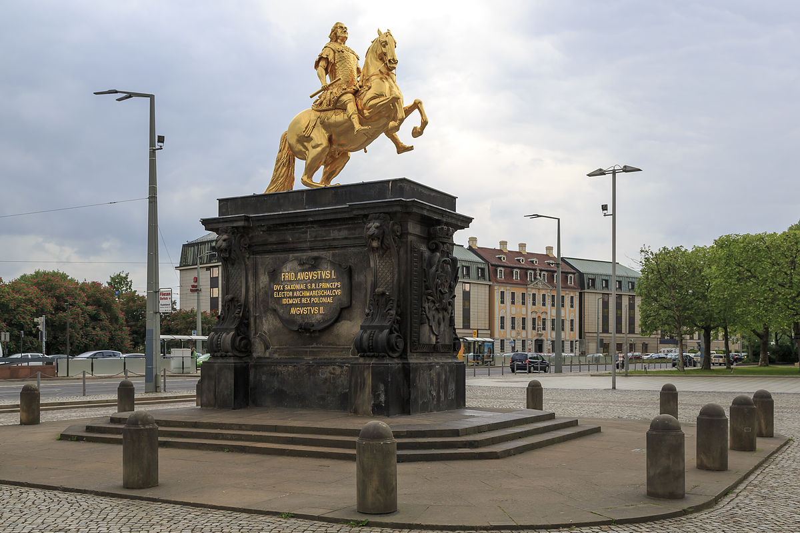

Sightseeing in Dresden
The quarter on the right banks of the Elbe is called Neustadt,
even though the settlement across the Old City bore the name "Altendresden" (Olden Dresden)
until the 18th century. Freedom of the city was granted already in 1403, but nevertheless it
always remained in the shade of the residence on the other side of the Elbe. After a
disastrous fire in 1685 the quarter – in the meanwhile incorporated into Dresden – was
systematically rebuilt as the "New Town near Dresden", the Neustadt quarter.
The baroque reconstruction produced attractive streets and sites which can still be
experienced in the area around Königstrasse. Prelude to the "Inner Neustadt" is
the Neustädter Markt with the equestrian statue of the Saxon elector and Polish king
Frederick August I, the "Golden Horseman". Beyond the statue is the beginning of the
Hauptstrasse, the main street of the historical quarter.
Upstream the government quarter on Königsufer bank borders
on the Inner Neustadt and is dominated by the two monumental
buildings of the Saxon Ministry of Finance (1890/96) and the
Saxon State Government (former General Ministry, 1900/04) with
their splendid historicist facades and roof constructions.

The northern adjoining district is called the Outer Neustadt,
a residential district with preserved historicized architecture
from the turn of the century. In the past decade a manifold cultural
scene has developed in the narrowly built streets.
Today the Outer
Neustadt between Königsbrücker Strasse and Lutherplatz square has
uncounted restaurants, manifold shopping opportunities and cultural offers.